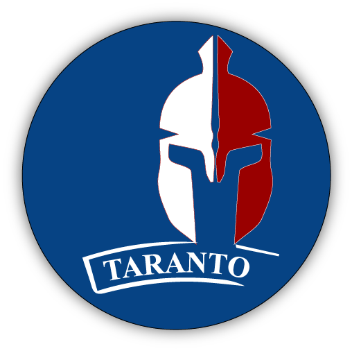

This is a logo inspired by
the Castello D'Ayala,
the symbol of my town.


This logo was inspired by a
special event in Taranto,
the Spartan Race.
Moreover, red and blue are
the colors of the city.
special event in Taranto,
the Spartan Race.
Moreover, red and blue are
the colors of the city.